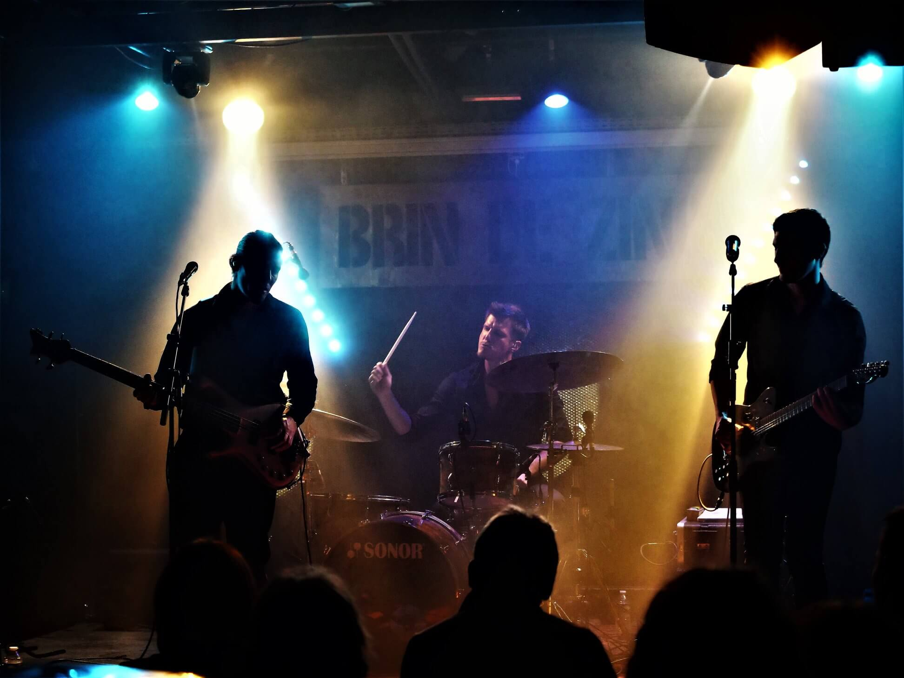

Fields of Næcluda a été initié en 2018 par Michel Teyssier (composition/basse/chant) qui écrit et enregistre les premières pistes en solo depuis son home-studio avant d'être rejoint par la suite par Mathieu Schricke (batterie).
Ensemble, ils affinent la musique du projet qui évolue entre rock alternatif progressif et ambient/metal, pour confectionner un premier album paru le 6 décembre 2019 via Inouïe Distribution.
La musique et les textes de Fields of Næcluda traduisent des instants forts de la vie, de ceux qui souvent échappent à notre compréhension du moment. En ressort une atmosphère onirique, poétique, mais également énergique et puissante.
Après les premiers concerts, le line up du groupe se stabilise avec l'arrivée d'Etienne Doucet à la guitare. Un deuxième album est d'ores et déjà en cours de préparation.
Fields of Næcluda was launched in 2018 by Michel Teyssier (composer/bass/singing) as a solo studio project. After the recordings of the first tracks, Mathieu Schricke (drums) joined the project.
Together they reshaped the music of Fields of Næcluda wich evolves between progressive alternative rock and ambient metal, in order to produce the first album. This one was released on December 6th, 2019 via Inouïe Distribution.
The result is a dreamlike, poetic but also energetic and powerful atmosphere.
After the first gigs, the band's line up stabilizes with the arrival of Etienne Doucet (guitar)
A second album is already in preparation.
music Fields of Næcluda a été initié en 2018 par Michel Teyssier (composition/basse/chant) qui écrit et enregistre les premières pistes en solo depuis son home-studio avant d'être rejoint par la suite par Mathieu Schricke (batterie).
Ensemble, ils affinent la musique du projet qui évolue entre rock alternatif progressif et ambient/metal, pour confectionner un premier album paru le 6 décembre 2019 via Inouïe Distribution.
La musique et les textes de Fields of Næcluda traduisent des instants forts de la vie, de ceux qui souvent échappent à notre compréhension du moment. En ressort une atmosphère onirique, poétique, mais également énergique et puissante.
Après les premiers concerts, le line up du groupe se stabilise avec l'arrivée d'Etienne Doucet à la guitare. Un deuxième album est d'ores et déjà en cours de préparation.
music Fields of Næcluda was launched in 2018 by Michel Teyssier (composer/bass/singing) as a solo studio project. After the recordings of the first tracks, Mathieu Schricke (drums) joined the project.
Together they reshaped the music of Fields of Næcluda wich evolves between progressive alternative rock and ambient metal, in order to produce the first album. This one was released on December 6th, 2019 via Inouïe Distribution.
The result is a dreamlike, poetic but also energetic and powerful atmosphere.
After the first gigs, the band's line up stabilizes with the arrival of Etienne Doucet (guitar)
A second album is already in preparation.
“C'est un excellent début, prometteur et très bien produit, absolument digne de votre temps”
Progstreaming.nl
“...un remarquable début pour une production française”
Antonis Kalamoutsos - Rocking.gr
“Voilà bien un bel exemple d’album multiple-couleurs qui montre le vrai potentiel de Fields of Næcluda qui nous offre aujourd’hui un très bel opus”
Philippe Thirionet - Music in Belgium
“Album qui sait proposer de la pop de façon très évidente, en repoussant les limites standards du format de la chanson”
Alberto Vitale - Metalhead.it
“si vous aimez le Post Rock et le Rock Progressif teintés d'alternatif, vous devriez écouter le travail de FIELDS OF NÆCLUDA, qui a signé un premier album franchement bon. De temps en temps, l'underground nous offre des débuts aussi ambitieux et soignés que ce "Fields of Næcluda”
NOIZZ webzine
“Un bel album que ce Fields of Naecluda, de bonnes émotions, un beau voyage harmonique et mélodique…”
IvanJack25 - Pavillon 666 webzine
“L'album est très plaisant et convainc par son ambiance générale. Chapeau!”
Ingo Schmitz - Soundmagnet.eu
“Fields Of Næcluda montre avec cet album qu'ils peuvent écrire de belles 'pop-songs' qui peuvent produire des adeptes dans le coin de l'indie rock.”
Maurice Van Der Zalm - Rockportaal.nl
“En définitive, un album qui demande à être écouté plus d’une fois pour en retirer toute la substantifique moelle.”
Tibere - Prog Censor
“En conclusion Fields of Næcluda c’est une chouette découverte et un premier album qui vaut plus que largement le détour. Il y a une créativité intelligente et bien menée. Une énergie bien canalisée et une maestria qui évoque des longs moments de dur labeur. Allez y vous ne serez pas déçu.”
Jipe Yoda - Prog Critique
“un bien bel objet de musique onirique avec un petit côté poétique enchanteur et des mélodies délicates qui devrait trouver preneur chez ceux qui désire écouter autre chose que du banalisé.”
Boomerang O2 radio
“Fields of Næcluda a de solides arguments dans sa manche et pourrait être une nouvelle étoile dans le ciel du rock progressif”
Carsten Agthe - BetreutesProggen.de
"It's an excellent start, promising and very well produced, absolutely worth your time."
Progstreaming.nl
"...a remarkable debut for a French production."
Antonis Kalamoutsos - Rocking.gr
"This is a nice example of a multi-color album that shows the real potential of Fields of Næcluda, which today offers us a very beautiful opus."
Philippe Thirionet - Music in Belgium
"An album that makes pop music in a very obvious way, by pushing the standard limits of the song format."
Alberto Vitale - Metalhead.it
"if you like Post Rock and Progressive Rock with an alternative flavour, you should listen to the work of FIELDS OF NÆCLUDA, who has signed a frankly good first album. From time to time, the underground offers us some beginnings as ambitious and neat as this "Fields of Næcluda."
NOIZZ webzine
"A beautiful album that this Fields of Naecluda, good emotions, a beautiful harmonic and melodic journey..."
IvanJack25 - Pavillon 666 webzine
"The album is very pleasant and convinces by its general atmosphere. Hats off!"
Ingo Schmitz - Soundmagnet.eu
"Fields Of Næcluda shows with this album that they can write beautiful pop songs that can produce a following in the indie rock scene."
Maurice Van Der Zalm - Rockportaal.nl
"All in all, an album that needs to be listened to more than once. to remove all the substantial marrow."
Tibere - Prog Censor
"In conclusion, Fields of Næcluda is a great discovery and a first album which is more than worth the detour. There's smart, well-executed creativity. A well-channelled energy and a mastery that evokes long moments of hard work. Go ahead, you won't be disappointed."
Jipe Yoda - Prog Critique
"A beautiful object of dreamlike music with an enchanting poetic side and delicate melodies that should find a buyer in those who wishes to hear something other than trivialized."
Boomerang O2 radio
"Fields of Næcluda has some strong arguments up its sleeve and could be a new star in the sky of progressive rock."
Carsten Agthe - BetreutesProggen.de